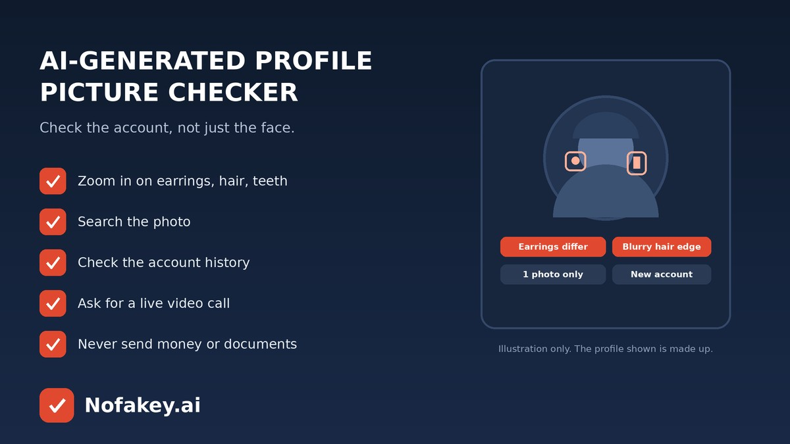

A friendly stranger messages you. The profile photo is polished, the smile is warm, and the story is moving fast. Is that face real? AI tools can now create realistic people who never existed, and fake accounts use them for romance scams, fake recruiters and investment pitches. Many people look for an AI-generated profile picture checker to settle the question. A checker can help a little, but the real answer comes from combining a few quick checks. Here is how.
Face clues in AI-generated profile pictures
Open the largest version of the photo and zoom in slowly.
| What to check | What it can look like |
|---|---|
| Accessories | Earrings that don’t match, glasses that melt into the face, a necklace that fades into skin |
| Hair | Strands that blur into the background, odd flyaways, or hair that merges with clothing |
| Teeth and eyes | Teeth that blur together or look too uniform, pupils or reflections that don’t match |
| Background | Warped lines, strange shapes, text that is garbled, or people behind who look unfinished |
| Skin and lighting | Skin that looks airbrushed, lighting that doesn’t match the setting, or an overly smooth finish |
| Framing | A perfectly centred face, studio-like portrait, and no other photos with a natural look |
Some real photos have glitches too, thanks to filters and beauty modes. Treat these as clues, not proof.
Check the account behind the picture
This is usually more telling than the photo.
- One photo only. Real people usually have group shots, older posts and photos taken at different times and places.
- Brand-new or empty account. Few posts, few real interactions, or a sudden burst of activity.
- A story that doesn’t add up. Job, location and background that shift or can’t be confirmed anywhere else.
- Fast intimacy or big promises. Quick declarations of love, a “can’t-miss” investment or a dream job offer.
- Moving you off the platform to a private chat app, and avoiding calls.
Quick checks you can do in minutes
- Zoom in on the details above.
- Run a reverse image search. A match with another name or unrelated profiles means the photo is stolen. No results is inconclusive. See reverse image search for AI-generated photos for how to read the results.
- Look at the full history, including older posts, tagged photos, comments from real people and connections you share.
- Ask for a live video call. A real person can usually do this. Repeated excuses are a warning sign.
- Ask for something specific, like a photo holding a handwritten note with today’s date. Be aware this can be faked too, so don’t treat it as proof.
- Verify through another route. If they say they work somewhere, contact the company through its official channels.
What about an AI profile picture checker tool?
Some tools score a photo for how likely it is AI generated. They can add a clue, but they can miss newer image tools, struggle with edited or low-quality photos, and wrongly flag real people. They also can’t tell you whether an account is honest. A real photo can sit on a scam account, and an AI avatar can belong to a harmless person who wants privacy. Read are AI detectors accurate? before trusting a score.
If you suspect a fake profile
- Don’t send money, gift cards, codes or ID documents. That includes “small” amounts and “temporary” help.
- Stop engaging and save screenshots of the profile and messages.
- Block and report the account to the platform.
- If you already paid, contact your bank or payment provider straight away and report to your national cybercrime or fraud service.
- Watch for follow-ups from “recovery experts” or “support” offering to get your money back for a fee.
Fake profiles often use fake video or voice as well. See how to know if a video is AI generated and the AI voice clone scam guide. For job and ID requests, read about the fake AI identity reverification scam. If a profile sent you a link or message that feels off, paste that text into our free checker for a quick first read. It checks messages and links, not photos.
Frequently asked questions
How can I tell if a profile picture is AI generated?
Zoom in for mismatched earrings or glasses, blurry hair edges, odd teeth, warped backgrounds and a perfectly centred face. Then check the account itself: its history, other photos, followers and whether the person agrees to a live video call. Several clues together matter more than one.
Is there a free AI-generated profile picture checker that is accurate?
Some tools give a probability score, but none is reliable enough to be the final word. They can miss new image tools and wrongly flag real photos. Use a score as one clue, together with account checks.
Does an AI profile picture always mean a fake or scam account?
No. Some real people use AI avatars or stylised pictures for privacy or fun. It is a concern when the picture is presented as a real person alongside other warning signs, such as pressure for money, secrecy or refusing a video call.
Can reverse image search find a fake profile picture?
It can reveal if the photo is stolen from another person or appears on unrelated profiles. It may not find a brand-new AI-generated face, so no results is inconclusive.
What should I do if I suspect a fake profile is contacting me?
Do not send money, codes or personal documents. Stop engaging, save screenshots, block the account and report it to the platform. If you already paid, contact your bank or payment provider quickly.
Conclusion
You don’t need a perfect checker. Zoom in for the obvious slips, then judge the account: its history, its story, and whether the person will show up live. Never send money or documents to someone you haven’t verified. Find more guides on the Nofakey.ai blog.
Got a suspicious message, link or email to check?
Run it through the checker